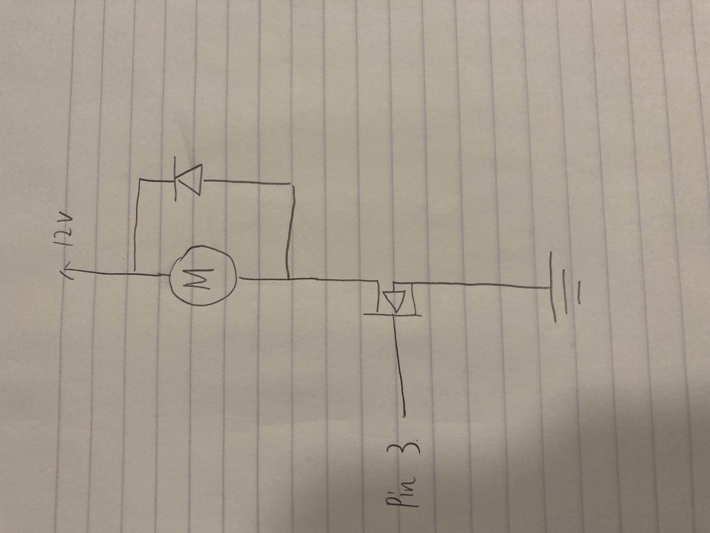

Assignment 5 - Higher voltage and transistors

Process:
- I use the N-MOSFET transistor and external power supply
- I use Ultrasonic Sensor an input sensor(Prof Nadya said I could use Ultrasonic Sensor without library) and use motor as output
The transistor can handle a max current because:
- I search online and find the datasheet about 3-6V DC Hobby Motor. The datasheet said "Current (6V): 0.13A / 1.3A Stalled". Our power supply is 12V, so I assume that the min current is "130MA * 2 = 260MA" and max current is 1.3A * 2 = 2.6A which is so much smaller than 32A (32A is transistor's max current).

(Output: Motor)
(Input: Ultrasonic Sensor)

Code:
int trigPin = 9; //set up trigPin as number 9
int echoPin = 10; //set up echoPin as number 10
long duration; //maximum range of an ultrasonic sensor
int distance; //set up distance as integer
void setup() {
pinMode(trigPin, OUTPUT); //make trigPin as an output
pinMode(echoPin, INPUT); //make echoPin as an input
pinMode(3, OUTPUT); //make pin 3 as an output
Serial.begin(9600); // initialize serial communication at 9600 bits per second:
}
void loop() {
digitalWrite(trigPin, LOW); //the trigPin can be connected to power by writing “LOW” at beginning
delay(2); //delay for 0.002s
digitalWrite(trigPin, HIGH); //the trigPin can be connected to power by writing “High” at beginning
delay(2); //delay for 0.002s
digitalWrite(trigPin, LOW); //the trigPin can be connected to power by writing “LOW” at beginning
duration = pulseIn(echoPin, HIGH); //measure the duration of a pulse received on a digital input pin connected to an ultrasonic sensor
distance = duration * 0.034 / 2; //Calculating the distance
Serial.print("Distance: "); //print the results to the Serial Monitor - start with "Distance: "
Serial.println(distance); //print the results of distance
if (distance > 20) { //if distance value is larger than 20
analogWrite(3, 0); // set the value of pin 3 is 0
} else { //else
analogWrite(3, 50); // set the value of pin 3 is 50
}
}